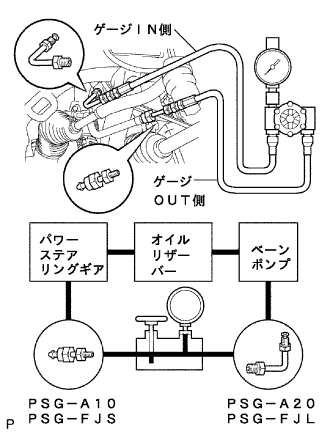
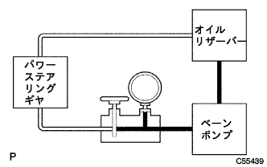
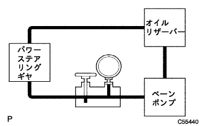
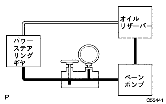
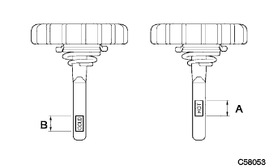
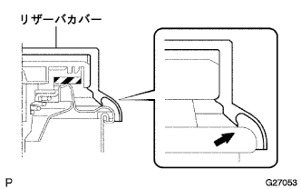

Power steering system (4WD) function inspection |
| 1. Endable steering torque |
Stop the vehicle on a flat pavement and go straight.
Turn off the power.(The point isreference)
Remove the horn button ASSY.(The point isreference)
Connect the power supply.
Use a torque wrench to check the steering wheel set nut for loosening.
Start the engine and turn it into idol rotation.
Turn the steering wheel to the right from the straight state to check the rotating torque.Inspect the left rotation in the same way.
Make the front wheel straight.
Turn off the power.(The point isreference)
Attach the horn button ASSY.(The point isreference)
Connect the power supply.
Erase the diagnostic cord.(The point isreference)
Inspect the airbag warnin grand lamp.(The point isreference)
| 2. Power steering system Hydraulic inspection |
Remove the front tire RH
The engine Anda cover RH is removed
Oxygen sensor cut off
Exhaust manifold heat insulator No.1
Exhaust pipe ASSY FR removed
Remove the vane pump stallia
Pressive feed tube Assign
Pressure gauge installation
Put the IN side of the pressure gauge on the pressureport union of the pressure gauge via the attachment.
|  |
The OUT side of the pressure gauge is attached to the pressure feed tube via the attachment.
Exhaust pipe ASSY FR installation
Oxygen sensor connection
Vane Pump V belt (Power Type Belt) Adjustment (reference)
V belt tension / deflection quantity inspection (guidelines arereference)
Unbelievable
Setting oil temperature for hydraulic inspection
Start the engine.
The engine speed is 1000R/min or less, repeating the lock -lock of the steering wheel to increase the fluid temperature.
|  |
Vane pump generated hydraulic pressure inspection
The valve of the pressure gauge is fully closed when the idle rotates, and the hydraulic pressure is measured.
Hydraulic verification for no load
Make the pressure gauge valve fully open.
|  |
The hydraulic pressure is measured with 1000R/min and 3000R/min for the engine speed, and the hydraulic difference is inspected.In the case of outside the reference value, replace the van pump flow control valve.
Steering gear housing generated hydraulic pressure inspection
Make the pressure gauge valve fully open.
|  |
Cut the steering wheels to the left and right when the idle rotates to measure the hydraulic pressure.
Pressure gauge and attachment
Purtive fidet tube Association (guidelines)reference)
Exhaust pipe ASSY FR removed
Oxygen sensor cut off
Bain pump stallia installation (guidelinesreference)
Exhaust pipe ASSY FR installation
Exhaust manifold heat insulator No.1 installation
Oxygen sensor connection
Vane Pump V belt (Power Type Belt) Adjustment (reference)
V belt tension / deflection quantity inspection (guidelines arereference)
Unbelievable
Exhaust leak inspection
Engine Anda cover RH installation
Long tire RH installation
| 3. Steering wheel play inspection |
Start the engine and go straight to the vehicle.
Move the steering wheels lightly with your fingers and check the play.
| 4. Oil reservoir level inspection |
Let the vehicle horizontal.
The engine speed is 1000R/min or less, repeating the lock -locking of the steering wheels to increase the fluid oil temperature.
Remove the reservoir cap from the oil reservoir.
Make sure that there is no fluid foaming and cloudiness from the oil reservoir's mouth.
Measure the difference in the fluid level between the engine rotation and the stop.If it is outside the reference value, the air should be removed.If the effect is not effective, check the fluid leakage of the hydraulic system.
|  |
Inspect that the fluid level is within the standard.If it is less than the standard, replenish the power steering fluid so that the upper limit is within the standard range.
|  |
Attach a reservoir cap and reservoir.
| 5. Power steering air removal |
Lift up the vehicle.
Slowly perform the lock -lock of the steering wheels while stopping the engine.
Lift the vehicle.
Start the engine without stepping on the accelerator pedal and leave it for a few minutes.
The engine speed is 1000R/min or less, and the steering wheel lock -lock is repeated several times.
With an engine speed of 1000R/min or less, the steering wheels are kept in a delinquent hold (5-6 seconds with the steering wheels filled with a full cut) at 2-3 seconds.
After stopping the engine until the foaming and cloudiness of the oil reservoir disappears, the engine starts again and confirms that there is no foaming and cloudiness even if lock -tsu locks and stationary holding in idling rotation are performed.
Perform oil reservoir level level inspection.
| 6. Power steering fluid leak inspection |
Check for fluids from the location in the figure.